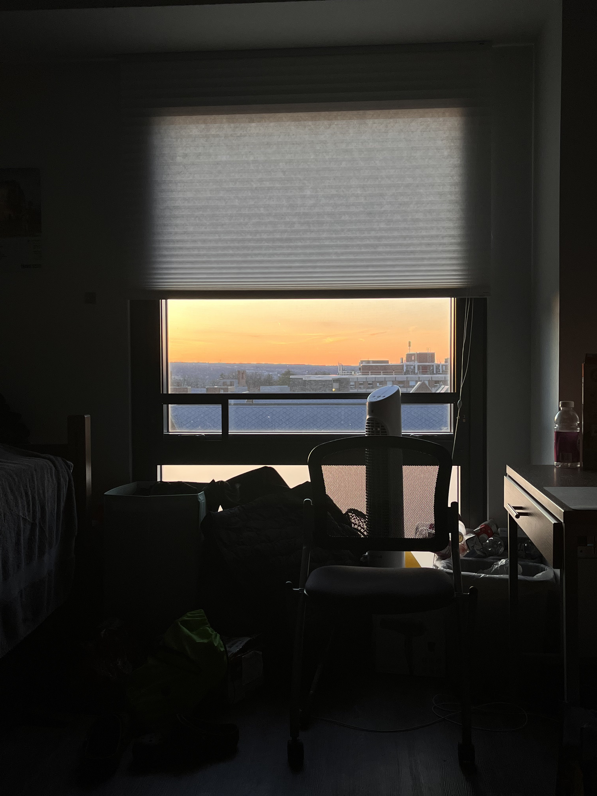
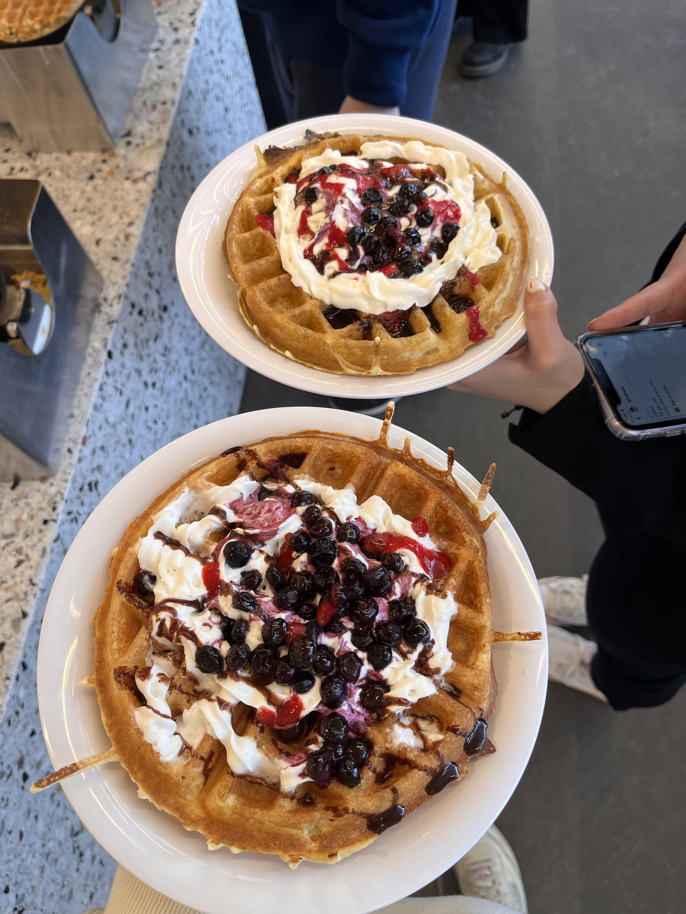

Wow. It's been a whole month since my last journal entry. And there is a lot to talk about. But, I wanted to just briefly include a verse before I start:
"Do not be anxious about anything, but in everything by prayer and supplication with thanksgiving let your requests be made known to God." Philippians 4:6 (ESV)
I know this is the same verse as in my About Me page, but I find the verse truly helpful in times like this. Recently, there has been a lot going on in my life. A lot of my stress and anxiousness is the result of academics and I feel that it has definitely taken a toll on me and my mental health. However, I've recently sat with this verse in my mind, realizing just how small and irrelevant these grades are to the everlasting life and freedom God provides. I just need to trust in Him through all situations.
This past month has been a very busy and stressful month that much of it I have already forgotten. Maybe it is because I've tried to remove it from my memory. This semester, I am taking CS 2110 and CS 2800. I thought it would be manageable and comparable to last semester, but truly I have been faced with adversary. For the last couple of weeks, my psets for CS2800 have taken me 10+ hours to do each and, for most of it, I sit in office hours trying to understand and grasp how to get towards the right dirrection. I don't even do well sometimes and it feel so frustrating. I don't really have anyone to work with or ask for help so I'm really just trying to get by at this point. On top of that, I just had three (you could say two) prelims this past week. A Chinese written prelim on Tuesday, a Chinese oral prelim on Wednesday, and a CS 2110 prelim on Thursday. Definitely a stressful week as I also had a problem set and CS assignement due on Tuesday and Wednesday respectively. I really don't know what to do sometimes.
On another note, my faith has really been on an all time low. A lot of times, I feel myself relying solely on myself and not on God in my struggles. I've put so much self value in academic and professional success that it has taken a toll on my faith. I've been avoiding reading my bible, doing devotionals, and even reading the Christian books on my desk. I've also been very anxious recently because I know that my faith isn't where I want it to be at yet I still do nothing about it. There's so much work to do everyday and I feel lost and uncertain about the future. I guess it may be a shared sentiment among many Cornellians, but then again, WHY? I want my college experience to be a time filled with God's presence, everlasting joy and desire to pursure Him, while also doing well in my studies for His glory only.
In addition, I've been putting some more time into hobbies, such as dancing. I joined E.Motion this semester and it really has been fun. I think it is what keeps me going because otherwise I'd be studying all day haha. I joined an Special PT for the song, Love 119 and the practices have really made my weeks better. The deadline to submit video recordings for our SPT is coming up very soon so it is a bit stressful, but fun nonetheless. It has been so fun dancing with amazing people and I've found a lot of joy in participating in this hobby. As usual, I'm continuing to try to take care of myself by sleeping early and trying to go to the gym, but recently I've been slacking off. Hopefully all of this and my stress can improve and I can really put God first in everything I do. Because the only fulfillment I can ever get is through God.